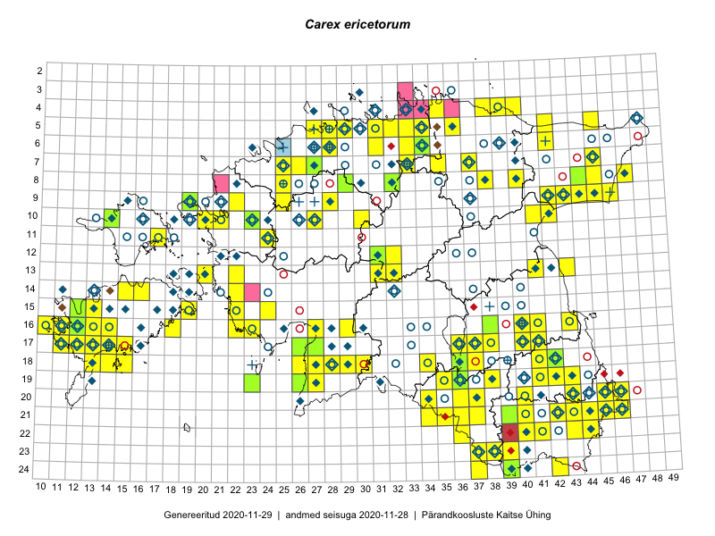

Carex ericetorum
Uuendatud: 2016-12-01
Kaardile koondatud taksonid: Carex ericetorum Pollich

Kaart põhineb 134 kirjel, neist vaatlusi 131 ja eksemplare 3.
Kuvatud viited 20 esimesele andmebaasikirjele, ülejäänud PlutoFis
- Thea Kull: 2015-04-27: 07-45: ala
- Thea Kull: 2015-07-07: 16-40: ala
- Toomas Kukk, Eerik Leibak: 2015-08-09: 14-15: ala
- Tiit Hallikma, Toomas Kukk: 2015-07-21: 05-45: ala
- Toomas Kukk, Kersti Tambets, Sten Mander, Janika Sammasto, Timo Luhamäe: 2014-07-30: 21-45: ala
- Rein Kalamees, Kersti Püssa: 2015-09-11: 06-34: ala
- Rein Kalamees, Kersti Püssa: 2015-08-11: 21-46: ala
- Rein Kalamees, Kersti Püssa: 2015-07-16: 20-45: ala
- Rein Kalamees, Kersti Püssa: 2015-09-12: 05-33: ala
- Ott Luuk, Hannes Pehlak: 2015-07-24: 09-44: ala
- Ott Luuk, Hannes Pehlak: 2015-07-22: 07-45: ala
- Toomas Kukk, Timo Luhamäe, Kersti Tambets, Sten Mander, Janika Sammasto: 2014-07-30: 21-45: ala
- Thea Kull, Eerik Leibak: 2015-07-22: 05-42: ala
- Toomas Kukk, Kersti Tambets, Timo Luhamäe, Janika Sammasto, Sten Mander: 2014-07-29: 18-42: ala
- Toomas Kukk, Ott Luuk, Sander Laherand: 2014-08-24: 14-22: ala
- Indrek Tammekänd, Liisa Rennel, Agu Leivits, Hannes Pehlak, Irja Tammekänd: 2015-04-27: 15-24: ala
- Indrek Tammekänd: 2015-05-31: 14-22: ala
- Indrek Tammekänd, Jana Galadi: 2015-06-03: 15-22: ala
- Mari Reitalu: 2015-05-06: 17-13: ala
- Mari Reitalu, Sirje Azarov: 2015-05-12: 17-13: ala